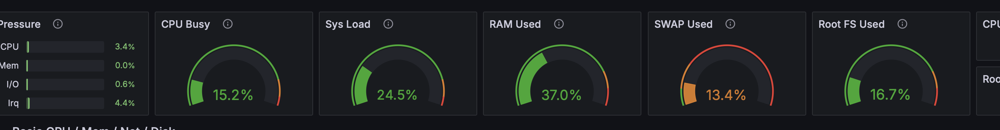
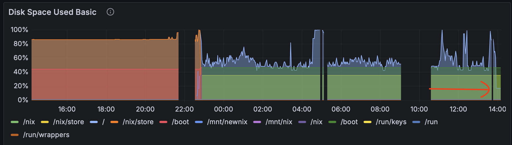
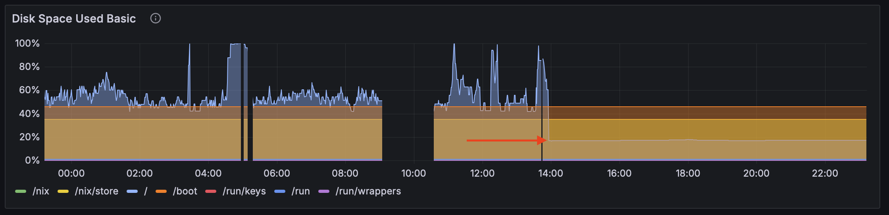

Last night I put up a simple server which allowed customers to download the digital Kanjideck files. This server is hosted on a small Hetzner machine running NixOS, at 4GB of RAM and 40GB of disk space. One of these downloadable files weights 2.2GB.
The matter at hand boils down to a simple Haskell program which serves static files (with some extra steps regarding authorization) plus an nginx reverse proxy which proxies requests to a certain “virtual host” to the Haskell program.
1 First, Panic
Not even minutes after I announced that the files were finally available, hundreds of customers visited my server all at once. As the logs started flying off of my screen with all the accesses, I started noticing a particularly interesting message, repeated over and over again:
Mar 31 20:43:03 mogbit kanjideck-fulfillment[2528300]: user error
(Unexpected reply to: MAIL "<...> at kanjideck.com",
Expected reply code: 250, Got this instead: 452 "4.3.1 Insufficient system storage\r\n")Oh no. No one’s able to access their files and I’m already receiving emails about it. I messaged the users explaining the server was having some issues that I was resolving.
Grafana shows 40GB/40GB disk space used up, so does df -h have 100% usage of /dev/sda.
I have to clear up space fast. I’m afraid at this point that I’m not even
receiving the user complaints anymore since my mail could be getting dropped by
lack of space.
I rushed to run du -sh on everything I could, as that’s as good as I could manage.
The two larger culprits were /var/lib’s Plausible Analytics, with a 8.5GB (clickhouse)
database, and the /nix/store with the full server configuration,
installation, and executables, at 15GB.
(In hindsight, I should have stopped right here to think carefully about what could possibly be occupying the remaining 20GB. I assumed “the rest of the files”, but looking back the “rest of the files” could hardly total 20GB.)
Delete everything that I can.
First off, the /nix/store may have unnecessary executables and past
configurations. This should be a big win. Drop it all with
$ nix-collect-garbage -d
...
removing old generations of profile /nix/var/nix/profiles/system
error: opening lock file '/nix/var/nix/profiles/system.lock': No space left on deviceClearing the nix store doesn’t work because there’s no space left on device (meanwhile, imagine the panic as the errors scroll by as users try over and over again to download the files which keep giving them errors).
OK, let’s kill the logs first.
journalctl --vacuum-time=1sThis restored enough space for me to clear the nix store. Next big item on the list is the clickhouse database. Some googling tells me I can truncate some of the logs tables to reduce the size. Let’s try it:
clickhouse-client -q "TRUNCATE TABLE system.query_log"
Received exception from server (version 24.3.7):
Code: 243. DB::Exception: Received from localhost:9000. DB::Exception: Cannot reserve 1.00 MiB, not enough space. (NOT_ENOUGH_SPACE)
(query: TRUNCATE TABLE system.query_log)Aaaand we’ve run out of space again. The service is still returning errors left and right to the users. Maybe the nix store didn’t clear up enough space, but there’s clearly something that keeps consuming more and more space, correlated with the influx of users.
2 Mounting the Nix Store on a separate Volume
When in panic, buy more space. Except that Hetzner didn’t have an available cloud instance with more space for me to upgrade to.
Plan B: I could still buy more space as a separate Volume.
The /nix/store is an immutable store and I had heard of people setting up
their nix stores on separate drives before. It was also the largest system
component at 12GB now. A perfect candidate.
Luckily (rather, due to NixOS) everything went smoothly with this transition.
Following the instructions on “Moving the store” in the NixOS
Wiki worked
flawlessly. The new Volume was labeled nix with mkfs.ext4 -L nix /dev/sdb
and the mounting migration first done manually, but at the end of the day we
have a final declarative configuration of the system:
fileSystems."/nix" = {
device = "/dev/disk/by-label/nix";
fsType = "ext4";
neededForBoot = true;
options = [ "noatime" ];
};After rebooting the server, the /nix/store was living in a separate volume
and the root drive finally had enough space to reply to the users.
Grafana was no longer red all over and the logs were no longer streaming error messages. The filesystem was still 50% used up and it seemed to increase up to around 60-65% when various users were downloading the large 2.2GB file. But. Working.
3 Finding the root cause in Nginx
This morning I anxiously opened my inbox. There were a handful of complaints about the large 2.2GB file download stopping halfway through and never successfully downloading.
However, users were able to access the download page and download all the other (arguably more important) files. Not bad! Grafana was still green and filesystem usage at about 50%.
The large file bug was important to fix promptly.
Recall from the server architecture that nginx proxies to the program which serves the files.
With some investigation I found proxy_max_temp_file_size, which defaults to
Default: proxy_max_temp_file_size 1024m;Increasing the value to
5000mallowed the 2.2GB file to be served successfully by the proxy!Have you read the documentation for this option? I just skimmed.
One bug down. And the disk space issue seemed tamed, but… during the day, it briefly spiked up to 100% again! Without last night’s huge pressure I was able to investigate this more soundly.
The lsof +L1 command finds unlinked open files (see man lsof), i.e. files
to which there are no links from the file system but are still referenced by
some process and thus can’t be collected. Files which wouldn’t ever show up
with ds -h. I was greeted by 14.5 GB of deleted files held by nginx!
[nix-shell:~]# lsof +L1 | grep nginx
nginx 4659 nginx mem REG 0,1 10485760 0 1187 /dev/zero
nginx 4659 nginx mem REG 0,1 4096 0 1188 /dev/zero
nginx 4972 nginx mem REG 0,1 10485760 0 1187 /dev/zero
nginx 4972 nginx mem REG 0,1 4096 0 1188 /dev/zero
nginx 4972 nginx 19u REG 8,17 137494528 0 2103873 /tmp/nginx_proxy/6/19/0000000196 (deleted)
nginx 4972 nginx 21u REG 8,17 596893696 0 2104973 /tmp/nginx_proxy/1/17/0000000171 (deleted)
nginx 4972 nginx 24u REG 8,17 298344448 0 2105098 /tmp/nginx_proxy/3/17/0000000173 (deleted)
nginx 4972 nginx 25u REG 8,17 1785765888 0 2105000 /tmp/nginx_proxy/2/17/0000000172 (deleted)
nginx 4972 nginx 29u REG 8,17 894984192 0 2105100 /tmp/nginx_proxy/4/17/0000000174 (deleted)
nginx 4972 nginx 31u REG 8,17 1489068032 0 2101531 /tmp/nginx_proxy/5/17/0000000175 (deleted)
nginx 4972 nginx 35u REG 8,17 745529344 0 2103341 /tmp/nginx_proxy/7/17/0000000177 (deleted)
nginx 4972 nginx 37u REG 8,17 965054464 0 2105961 /tmp/nginx_proxy/2/21/0000000212 (deleted)
nginx 4972 nginx 41u REG 8,17 1340678144 0 2103603 /tmp/nginx_proxy/0/18/0000000180 (deleted)
nginx 4972 nginx 43u REG 8,17 1633722368 0 2101619 /tmp/nginx_proxy/3/18/0000000183 (deleted)
nginx 4972 nginx 44u REG 8,17 1927659520 0 2103872 /tmp/nginx_proxy/5/19/0000000195 (deleted)
nginx 4972 nginx 52u REG 8,17 795958957 0 2103671 /tmp/nginx_proxy/2/19/0000000192 (deleted)
nginx 4972 nginx 53u REG 8,17 1591967405 0 2103702 /tmp/nginx_proxy/3/19/0000000193 (deleted)
nginx 4972 nginx 58u REG 8,17 2387853312 0 2103313 /tmp/nginx_proxy/1/21/0000000211 (deleted)
[nix-shell:~]# lsof +L1 | awk '/nginx/ {sum += $7} END {print sum/1024/1024/1024 " GiB"}'
14.5528 GiBRemember proxy_max_temp_file_size? Let’s read the documentation more carefully this time:
When buffering of responses from the proxied server is enabled, […], a part of the response can be saved to a temporary file.
The zero value disables buffering of responses to temporary files.
Nginx is buffering the 2.2GB file my program is serving to temporary files. Oh dear. Let’s fix that:
"<...>.kanjideck.com" = base {
"/" = {
proxyPass = "http://127.0.0.1:" + toString(ports.kanjideck-fulfillment) + "/";
extraConfig = ''
proxy_buffering off;
proxy_max_temp_file_size 0;
'';
};
};Grafana immediately cheered up, the server was finally fresh and lean and disk usage jumped to 20% with no more spikes:



In the disk usage graph images you can find the sudden drop to acceptable levels, which now reigns.
4 Conclusion
The server couldn’t serve access requests from 20:40 to sometime around 23:00, i.e. for about the first 2 hours immediately after launch.
Secondly, users couldn’t download the large file despite the remaining ones being available.
Both of these bugs turned out to be misconfigurations in the nginx reverse proxy.
It’s difficult to reason under pressure. Experience, that I didn’t have here, would have helped.
Note: this was written fully by me, human.